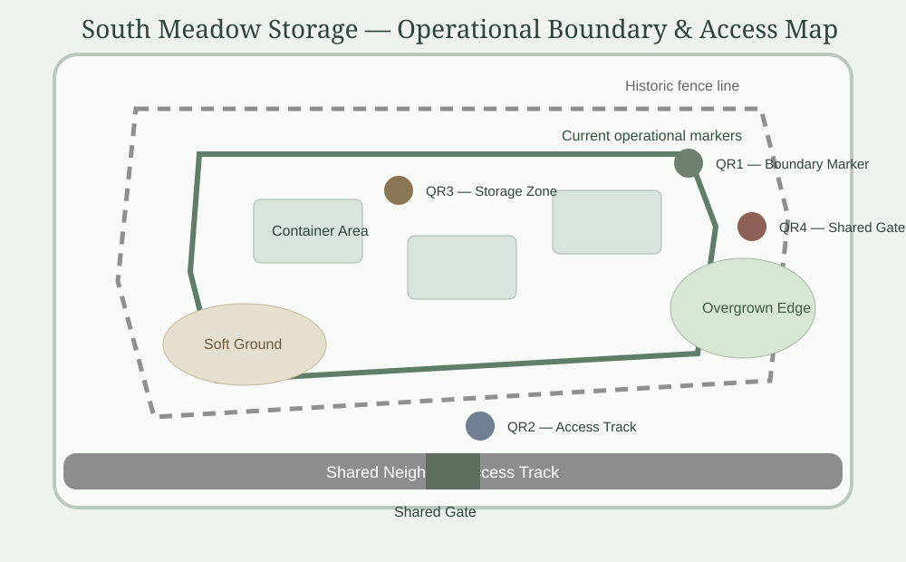

Portfolio Site
South Meadow Storage
Outdoor storage and operational holding area with evolving boundaries, informal storage history and shared access constraints.
View South Meadow Storage operational map

Storage Areas
7 Active
Boundary Reviews
2 Ongoing
Shared Access Gates
3 Controlled
Temporary Storage
Under Review
Site Context
Storage Area Overview
- Outdoor operational storage Containers, materials and temporary holding areas developed gradually over multiple occupancy periods
- Mixed boundary history Fencing, storage extents and access arrangements evolved over time with partial historic records
- Shared access environment Operational vehicles, deliveries and neighbouring access require coordinated movement management
Operational Reality
Current Friction Points
- Temporary storage creep Historic temporary holding areas remain partially occupied beyond original intended use
- Boundary interpretation Historic fence lines and storage assumptions require clarification during operational changes
- Shared gate coordination Delivery access and contractor attendance occasionally overlap during peak activity periods
- Seasonal ground conditions Soft ground and overgrown edges affect temporary vehicle positioning during wet weather
Boundary Governance
Site Edges & Neighbouring Access
- Historic fence line Physical fence does not fully confirm operational boundary responsibility
- Neighbour access track Operationally known on site as “The Willows” Shared access must remain clear for neighbouring land use
- Overgrown edge Boundary visibility reduced seasonally and requires periodic check
- Storage limit markers Temporary markers used until boundary position is confirmed
Storage Controls
Outdoor Storage Rules
- Record container location before placement
- Confirm storage area does not obstruct shared access
- Review temporary storage monthly where still occupied
- Photograph and log unclear boundary edges
- Escalate neighbour access concerns before moving materials
Operational Visibility
Map Access Guidance
- Estate management view Full operational map including historic boundary references and review areas
- Tenant / storage user view Current storage markers, shared access guidance and operational restrictions only
- Contractor view Access routes, turning guidance and temporary operational restrictions linked to approved works
- Neighbour access coordination Relevant gate and track restrictions shared only where operationally required